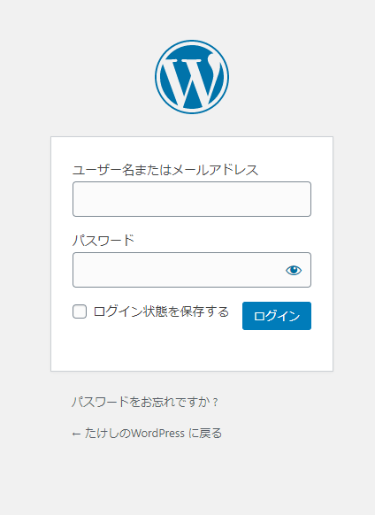
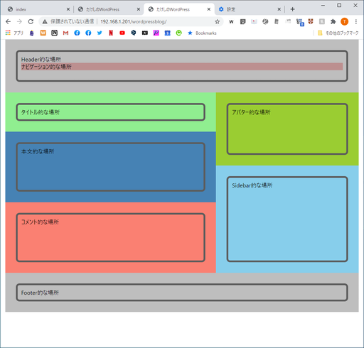
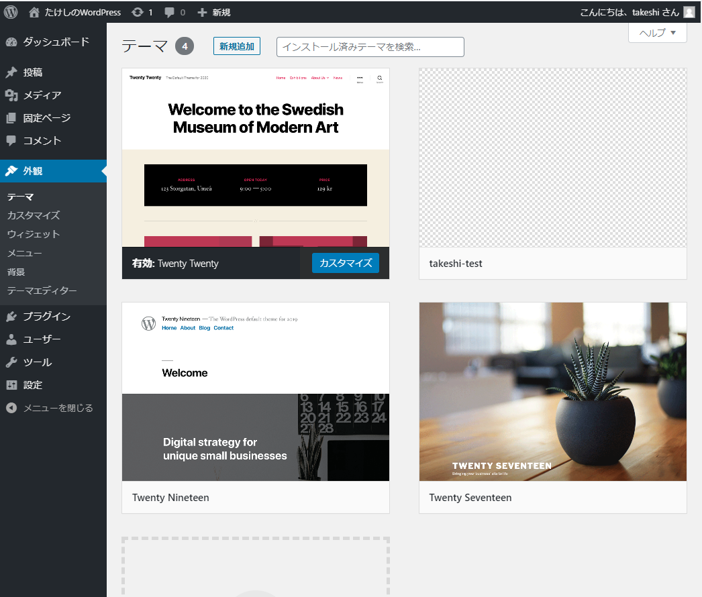
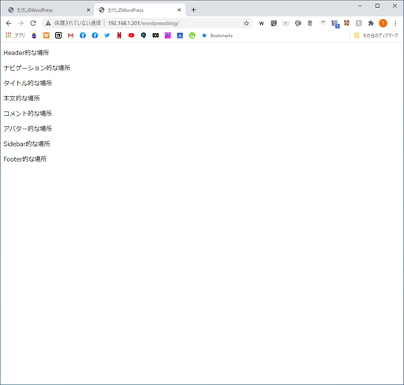
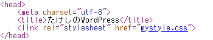
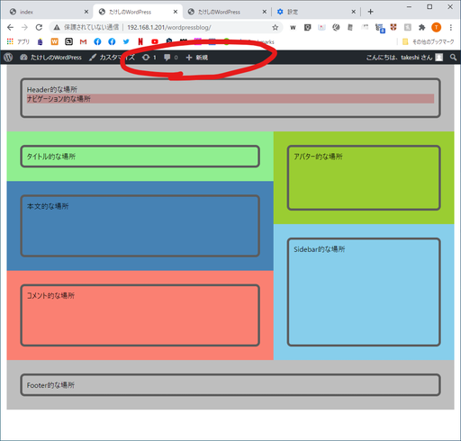

WordPressがどうやって記事を表示させているのか仕組みを知るために、まずは最低限のことしか書かれていない超シンプルなページを作る。
ローカル（PC側）
リモート（Raspberry Pi）
以下の方法を行う前に、管理画面にログインするURLをブックマークしておくこと。今回の作業ではこのページへのリンクを一旦消す。多分(WordPressのURL)/wp-login.phpで行けると思うけど、念のため。

ローカル上で適当にフォルダを作り、以下のindex.php、mystyle.css、style.cssを作成。コピペで可。
index.php：
<html lang="ja"><head> <meta charset="utf-8"> <title>たけしのWordPress</title> <link rel="stylesheet" href="mystyle.css"></head><body> <header> <div class="container"> <p>Header的な場所</p> <nav>ナビゲーション的な場所</nav> </div> </header> <main> <div class="main-left"> <div class="post-title"> <div class="container"> <p>タイトル的な場所</p> </div> </div> <div class="post-contents"> <div class="container"> <p>本文的な場所</p> </div> </div> <div class="post-comments"> <div class="container"> <p>コメント的な場所</p> </div> </div> </div> <div class="main-right"> <div class="avatar"> <div class="container"> <p>アバター的な場所</p> </div> </div> <div class="sidebar"> <div class="container"> <p>Sidebar的な場所</p> </div> </div> </div> </main> <footer> <div class="container"> <p>Footer的な場所</p> </div> </footer></body></html>mystyle.css：
x* { padding:0; margin:0; box-sizing: border-box;}body { max-width: 1000px; margin: 0 auto; font-family: "Yu gothic UI";}.container { height: 100%; width: 100%; padding: 10px; border: thick solid #5c5c5c; border-radius: 10px;}/* ヘッダー */header { height: 150px; padding: 30px; background-color: #bebebe;}/* ナビゲーション */nav { background-color: rosybrown;}/* メインコンテンツ */main { display: flex;}.main-left { flex-grow: 2;}.main-right { flex-grow: 1; display: flex; flex-direction: column;}/* 記事タイトル */.post-title { padding: 30px; background-color: lightgreen;}/* 記事本文 */.post-contents { height: 200px; padding: 30px; background-color: steelblue;}/* コメント */.post-comments { height: 200px; padding: 30px; background-color: salmon;}/* アバター */.avatar { padding: 30px; background-color: yellowgreen; flex-grow: 1;}/* サイドバー */.sidebar { padding: 30px; background-color: skyblue; flex-grow: 2;}/* フッター */footer { padding: 30px; background-color: #bebebe;}footer .container{ justify-content: space-between;}style.css：
xxxxxxxxxx/*Theme Name : Takeshi-theme*/PHP要素はまだ一切使っていないので、index.phpを一旦index.htmlにリネームしてダブルクリックするとブラウザが立ち上がってどんなページなのか確認できる。

分かりやすいようにできるだけシンプルにしてみた。HTMLなんかは知識が無くても読めばなんとなく分かると思う。<div class="container">は何で入れるのかわからん。Progateでそうやれって言ってた。でも入れると便利。
index.php、mystyle.css、style.cssをscpコマンドか何かでRaspberry Piにアップロード。アップロード先は
xxxxxxxxxx(WordPressをインストールしたディレクトリ)/wp-content/themes/(好きな名前のディレクトリ)
自分の場合、WordPressをインストールしたディレクトリは/home/takeshi/www/html/wordpressblogであり、wp-content/themesの中にtakeshi-testディレクトリを作成したから、アップロード先は
xxxxxxxxxx/home/takeshi/www/html/wordpressblog/wp-content/themes/takeshi-test
となる。
ディレクトリ作成はここ、scpコマンドでのアップロードはここを参考にする。
もし以前作った同期スクリプトを使う場合、$targetFolderNameと$remoteFolderの設定を変更すること。以下は自分の場合。$targetFolderNameはスクリプトがある場所から上の3つのファイルがあるフォルダまでの相対パス。
xxxxxxxxxx$targetFolderName = "\test\html\wordpressblog\wp-content\themes\takeshi-test"$remoteFolder = "/home/takeshi/www/html/wordpressblog/wp-content/themes/takeshi-test"WordPressにログインして「外観」を開くと、今アップしたテーマが追加されているので有効化する。

見た目がこちら。

ソースを覗くと、そのまんまアップされているので正しくCSSにリンクされていない。

WordPressのURLは、同一ネットワークから接続したとすると
xxxxxxxxxxhttp://192.168.1.201/wordpressblog
なので、上記のリンクだと、CSSファイルは
xxxxxxxxxxhttp://192.168.1.201/wordpressblog/mystyle.css
にあることになっている。でも実際にCSSファイルが存在するのは
xxxxxxxxxxhttp://192.168.1.201/wordpressblog/wp-content/themes/takeshi-test/mystyle.css
なので、リンクを修正する必要がある。
xxxxxxxxxx<link rel="stylesheet" href="mystyle.css">↓<link rel="stylesheet" href=" echo get_template_directory_uri(); /mystyle.css">そうするとちゃんと表示される。
wp_head()とwp_footer()を挿入する</head>タグの直前に<?php wp_head(); ?>を挿入する。
xxxxxxxxxx<head> ... wp_head(); </head>同様に</body>の直前にも<?php wp_footer(); ?>を挿入する。
xxxxxxxxxx<body> ... wp_footer(); </body></html>ログインした状態でWordPressを開いたら見える管理メニューが出てきた

どうもこれは必須の関数らしい。
WordPressに必要な最小構成とは
xxxxxxxxxxWordPressインストールディレクトリ└wp-content-themes-(任意の名前)├index.php├mystyle.css└style.css
の3つ。いや、「自分はCSSなんていらないんだ！」という人はmystyle.cssもいらないかな。
index.phpには
<?php wp_head(); ?>と<?php wp_footer(); ?>の挿入が必要。
<?php ~~ ?>とはPHP編でざっくり説明していくけど、簡単に説明すると<?php ~~ ?>はHTMLに埋め込まれたPHPのプログラムコード。~~の部分が実際に実行される部分。
例えば<?php echo get_template_directory_uri(); ?>では以下のコードが実行されている。
xxxxxxxxxxecho get_template_directory_uri();echo "文字列"でその文字列を出力、get_temeplate_directory_uri()はWordPress専用の関数。テーマファイルが入ったディレクトリまでのフルパスを文字列として出力してくれるらしい。